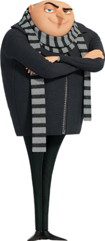

Raio Congelante
Tipo: Ataque
Gru atira o raio congelantee no oponente, tem um alcance de 20 metros e congela instantâneamente.
Agente da liga anti-vilões / Ex-Supervilão / Alemão

Arte oficial do personagem
Gru era um supervilão cujas ambições incluem arquitetar atos malignos, como roubar a Lua. Ele é careca, tem a cabeça desproporcionalmente grande, possui um nariz adunco e comprido e usa um casaco preto e um cachecol. Apesar de seus motivos perversos, ele é em grande parte inepto e frequentemente recorre a atos de vilania insignificantes. Sua casa suburbana é construída sobre um covil secreto, habitado por seus Minions.
A família de Gru se expande, quando adotou três meninas órfãs, Margo, Edith e Agnes, impulsiona sua trajetória de supervilão malévolo a pai reformado. Quando recrutado como agente pela Liga Anti-Vilões (AVL), ele conhece Lucy Wilde, que se torna seu interesse amoroso e esposa. Ele também é o pai biológico de um bebê chamado Gru Jr.
Tipo: Ataque
Gru atira o raio congelantee no oponente, tem um alcance de 20 metros e congela instantâneamente.

Tipo: Suporte
Ele pega o raio encolhedor e usa no oponente, o diminuindo, tem um alcance de 100 metros, mas o efeito passa dependendo da massa do oponente ou objeto.

Tipo: Suporte
Gru chama o iberê do manual do submundo pelo whatsapp e o faz montar uma arma de peido radioativa caseira e atirar no inimigo, tem um alcance de 2 metros, mas deixao inimigo desnorteado por 2 minutos.
"Eu não disse arma de pum. Disse arma kabum. Kabum!!!."
— Gru